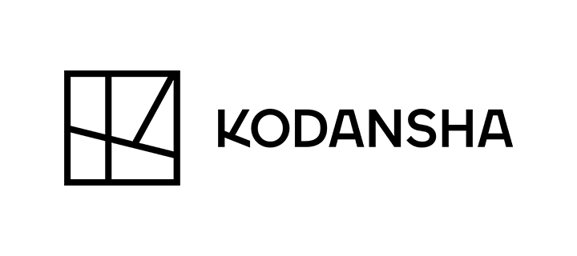
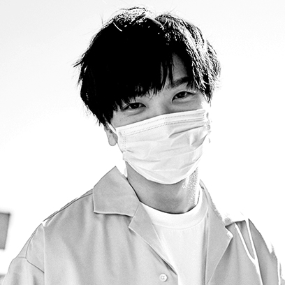

独立游戏项目


特别感谢
白金赞助商

- 
金牌赞助商


白银赞助商

设备赞助商

Judge
Member of Selected Indie 80 Committee
Head of the Judging Committee
Honorary Director and Secretary General of the International Game Developers Association Japan (IGDA Japan), a non-profit organization.Kenji ONO

Ex-Deputy Chief Editor of IGN JAPAN, Deputy Head of Business Design at Sankei Digital.
Shin IMAI

Calappa Games CEO
Masafumi ONUKI
KODANSHA GAME CREATOR'S LAB.
Yuki KATAYAMA
Director of gamebiz, Inc. and Editor-in-Chief of gamebiz.
Hidehiko KIMURA
Director AURYN
Kazunori KOMAGATA
Kinugasa Research Organization, Ritsumeikan University
Jh Shin

NPO OcuFes
Takeshi TAKAHASHI

Chairman of Fukuoka Indie Game Association
Koji MURAKAMI
Member of SOWN Committee

Head of the Judging Committee
Game JournalistKiyoshi Shin
Juan Gril

Videogame Ninja: Trusiga
Ramon Nafria
NPO OcuFes
Takeshi TAKAHASHI
Director AURYN
Kazunori KOMAGATA
Head of Indies Initiative
Sony Interactive Entertainment
Sony Interactive Entertainment
Shuhei YOSHIDA
KODANSHA GAME CREATOR'S LAB.
Yuki KATAYAMA
Kinugasa Research Organization, Ritsumeikan University
Jh Shin
Calappa Games CEO
Masasi ONUKI

Content creator
Pocky